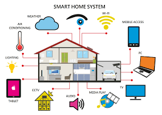

Smart Heating
Smart HeatingWelcome to the home of the future
What We Do
Today’s smart homes not only allow you to wirelessly control features such as audio visual systems, lighting, motorised blinds, thermostats and security they also allow you to program how your home should adjust to your needs. With home automation, you can control your home remotely from anywhere once you have a 3G / 4G or Wi-Fi connection on your smart phone or tablet. With the advent of voice control services such as Amazons Alexa or Google Assistant we can now integrate this feature into your home automation system giving you the ability to give commands to your smart home system without the need of a physical interface
Smart Control
And with the advent of voice control services such as Amazons Alexa or Google Assistant we can now integrate this feature into your home automation system giving you the ability to give commands to your smart home system without the need of a physical interface. 
Energy Efficiency
Whilst installing an energy efficient heating system is the first step, letting us automate it is a great next step. To achieve the ultimate heating control system, thermostats are integrated into the home automation system and can be accessed and controlled in-house or remotely. You can set and adjust heating schedules quickly, even when your at work or out and about. A typical scenario would be when you are coming home early and want to return to a warm house or if you are staying out later than planned you can delay the heating from activating. This enables your heating system to be both eco-friendly and cost effective.